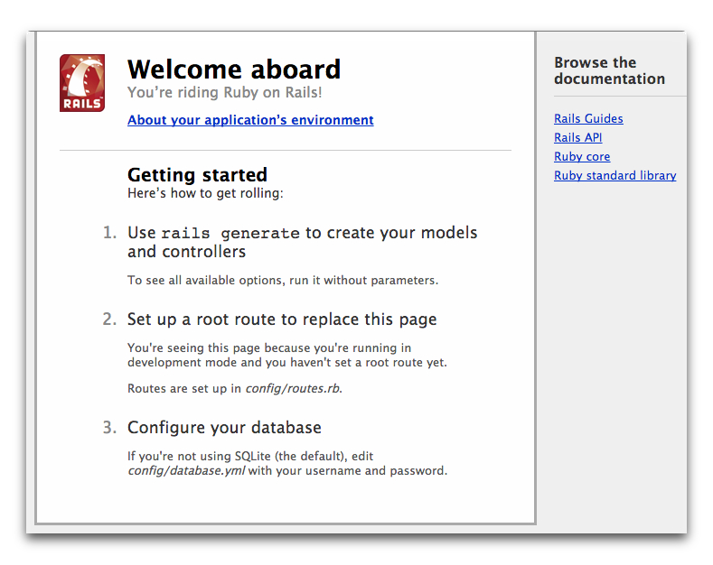

This guide is designed for beginners who want to get Rails installed on their machine. It does not assume that you have any prior experience with Rails. However, to get the most out of it, you need to have some prerequisites installed:
Rails is a web application framework running on the Ruby programming language. If you have no prior experience with Ruby, you will find a very steep learning curve diving straight into Rails. There are several curated lists of online resources for learning Ruby:
Be aware that some resources, while still excellent, cover versions of Ruby as old as 1.6, and commonly 1.8, and will not include some syntax that you will see in day-to-day development with Rails.
Rails is a web application development framework written in the Ruby language. It is designed to make programming web applications easier by making assumptions about what every developer needs to get started. It allows you to write less code while accomplishing more than many other languages and frameworks. Experienced Rails developers also report that it makes web application development more fun.
Rails is opinionated software. It makes the assumption that there is the "best" way to do things, and it's designed to encourage that way - and in some cases to discourage alternatives. If you learn "The Rails Way" you'll probably discover a tremendous increase in productivity. If you persist in bringing old habits from other languages to your Rails development, and trying to use patterns you learned elsewhere, you may have a less happy experience.
The Rails philosophy includes two major guiding principles:
The best way to use this guide is to follow each step as it happens, no code or step needed to make this example application has been left out, so you can literally follow along step by step.
By following along with this guide, you'll create a Rails project called
blog
, a (very) simple weblog. Before you can start building the application, you need to make sure that you have Rails itself installed.
The examples below use
$
to represent your terminal prompt in a UNIX-like OS, though it may have been customized to appear differently. If you are using Windows, your prompt will look something like
c:\source_code>
Open up a command line prompt. On Mac OS X open Terminal.app, on Windows choose "Run" from your Start menu and type 'cmd.exe'. Any commands prefaced with a dollar sign
$
should be run in the command line. Verify that you have a current version of Ruby installed:
A number of tools exist to help you quickly install Ruby and Ruby on Rails on your system. Windows users can use Rails Installer , while Mac OS X users can use Tokaido .
ruby -v ruby 2.0.0p353
If you don't have Ruby installed have a look at ruby-lang.org for possible ways to install Ruby on your platform.
Many popular UNIX-like OSes ship with an acceptable version of SQLite3. Windows users and others can find installation instructions at the SQLite3 website . Verify that it is correctly installed and in your PATH:
sqlite3 --version
The program should report its version.
To install Rails, use the
gem install
command provided by RubyGems:
gem install rails
To verify that you have everything installed correctly, you should be able to run the following:
bin/rails --version
If it says something like "Rails 4.1.1", you are ready to continue.
Rails comes with a number of scripts called generators that are designed to make your development life easier by creating everything that's necessary to start working on a particular task. One of these is the new application generator, which will provide you with the foundation of a fresh Rails application so that you don't have to write it yourself.
To use this generator, open a terminal, navigate to a directory where you have rights to create files, and type:
rails new blog
This will create a Rails application called Blog in a
blog
directory and install the gem dependencies that are already mentioned in
Gemfile
using
bundle install
.
You can see all of the command line options that the Rails application builder accepts by running
rails new -h
.
After you create the blog application, switch to its folder:
cd blog
The
blog
directory has a number of auto-generated files and folders that make up the structure of a Rails application. Most of the work in this tutorial will happen in the
app
folder, but here's a basic rundown on the function of each of the files and folders that Rails created by default:
| File/Folder | Purpose |
|---|---|
| app/ | Contains the controllers, models, views, helpers, mailers and assets for your application. You'll focus on this folder for the remainder of this guide. |
| bin/ | Contains the rails script that starts your app and can contain other scripts you use to deploy or run your application. |
| config/ | Configure your application's routes, database, and more. This is covered in more detail in Configuring Rails Applications . |
| config.ru | Rack configuration for Rack based servers used to start the application. |
| db/ | Contains your current database schema, as well as the database migrations. |
|
Gemfile
Gemfile.lock |
These files allow you to specify what gem dependencies are needed for your Rails application. These files are used by the Bundler gem. For more information about Bundler, see the Bundler website . |
| lib/ | Extended modules for your application. |
| log/ | Application log files. |
| public/ | The only folder seen by the world as-is. Contains static files and compiled assets. |
| Rakefile | This file locates and loads tasks that can be run from the command line. The task definitions are defined throughout the components of Rails. Rather than changing Rakefile, you should add your own tasks by adding files to the lib/tasks directory of your application. |
| README.rdoc | This is a brief instruction manual for your application. You should edit this file to tell others what your application does, how to set it up, and so on. |
| test/ | Unit tests, fixtures, and other test apparatus. These are covered in Testing Rails Applications . |
| tmp/ | Temporary files (like cache, pid, and session files). |
| vendor/ | A place for all third-party code. In a typical Rails application this includes vendored gems. |
To begin with, let's get some text up on screen quickly. To do this, you need to get your Rails application server running.
You actually have a functional Rails application already. To see it, you need to start a web server on your development machine. You can do this by running the following in the
blog
directory:
bin/rails server
Compiling CoffeeScript to JavaScript requires a JavaScript runtime and the absence of a runtime will give you an
execjs
error. Usually Mac OS X and Windows come with a JavaScript runtime installed. Rails adds the
therubyracer
gem to the generated
Gemfile
in a commented line for new apps and you can uncomment if you need it.
therubyrhino
is the recommended runtime for JRuby users and is added by default to the
Gemfile
in apps generated under JRuby. You can investigate about all the supported runtimes at
ExecJS
.
This will fire up WEBrick, a web server distributed with Ruby by default. To see your application in action, open a browser window and navigate to http://localhost:3000 . You should see the Rails default information page:

To stop the web server, hit Ctrl+C in the terminal window where it's running. To verify the server has stopped you should see your command prompt cursor again. For most UNIX-like systems including Mac OS X this will be a dollar sign
$
. In development mode, Rails does not generally require you to restart the server; changes you make in files will be automatically picked up by the server.
The "Welcome aboard" page is the smoke test for a new Rails application: it makes sure that you have your software configured correctly enough to serve a page. You can also click on the About your application's environment link to see a summary of your application's environment.
To get Rails saying "Hello", you need to create at minimum a controller and a view .
A controller's purpose is to receive specific requests for the application. Routing decides which controller receives which requests. Often, there is more than one route to each controller, and different routes can be served by different actions . Each action's purpose is to collect information to provide it to a view.
A view's purpose is to display this information in a human readable format. An important distinction to make is that it is the controller , not the view, where information is collected. The view should just display that information. By default, view templates are written in a language called eRuby (Embedded Ruby) which is processed by the request cycle in Rails before being sent to the user.
To create a new controller, you will need to run the "controller" generator and tell it you want a controller called "welcome" with an action called "index", just like this:
bin/rails generate controller welcome index
Rails will create several files and a route for you.
create app/controllers/welcome_controller.rb route get 'welcome/index' invoke erb create app/views/welcome create app/views/welcome/index.html.erb invoke test_unit create test/controllers/welcome_controller_test.rb invoke helper create app/helpers/welcome_helper.rb invoke test_unit create test/helpers/welcome_helper_test.rb invoke assets invoke coffee create app/assets/javascripts/welcome.js.coffee invoke scss create app/assets/stylesheets/welcome.css.scss
Most important of these are of course the controller, located at
app/controllers/welcome_controller.rb
and the view, located at
app/views/welcome/index.html.erb
.
Open the
app/views/welcome/index.html.erb
file in your text editor. Delete all of the existing code in the file, and replace it with the following single line of code:
Hello, Rails!
Now that we have made the controller and view, we need to tell Rails when we want "Hello, Rails!" to show up. In our case, we want it to show up when we navigate to the root URL of our site, http://localhost:3000 . At the moment, "Welcome aboard" is occupying that spot.
Next, you have to tell Rails where your actual home page is located.
Open the file
config/routes.rb
in your editor.
Rails.application.routes.draw do get 'welcome/index' # The priority is based upon order of creation: # first created -> highest priority. # # You can have the root of your site routed with "root" # root 'welcome#index' # # ...
This is your application's
routing file
which holds entries in a special DSL (domain-specific language) that tells Rails how to connect incoming requests to controllers and actions. This file contains many sample routes on commented lines, and one of them actually shows you how to connect the root of your site to a specific controller and action. Find the line beginning with
root
and uncomment it. It should look something like the following:
root 'welcome#index'
root 'welcome#index'
tells Rails to map requests to the root of the application to the welcome controller's index action and
get 'welcome/index'
tells Rails to map requests to
http://localhost:3000/welcome/index
to the welcome controller's index action. This was created earlier when you ran the controller generator (
rails generate controller welcome index
).
Launch the web server again if you stopped it to generate the controller (
rails server
) and navigate to
http://localhost:3000
in your browser. You'll see the "Hello, Rails!" message you put into
app/views/welcome/index.html.erb
, indicating that this new route is indeed going to
WelcomeController
's
index
action and is rendering the view correctly.
For more information about routing, refer to Rails Routing from the Outside In .